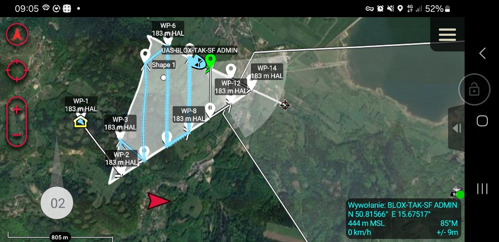
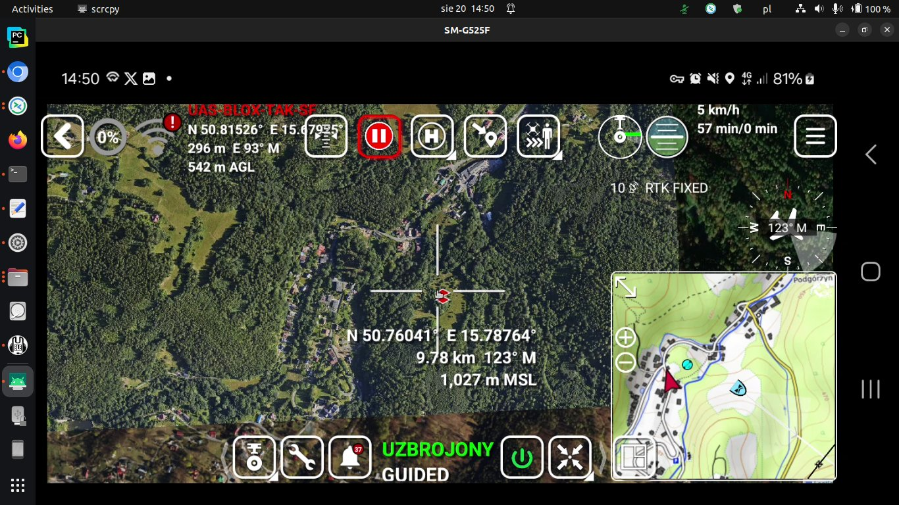
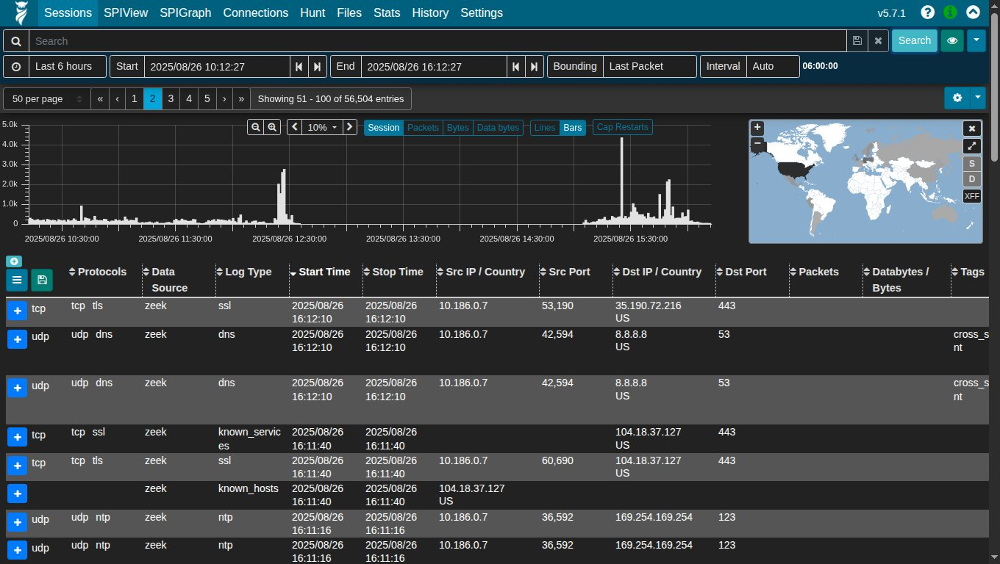
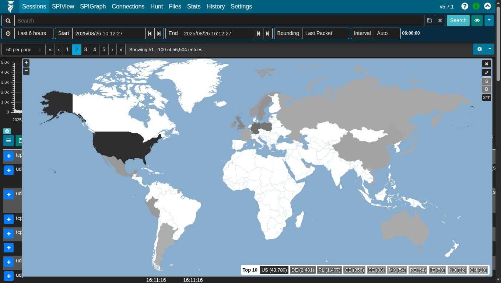
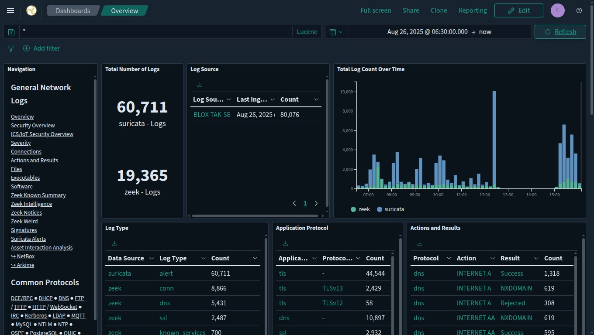
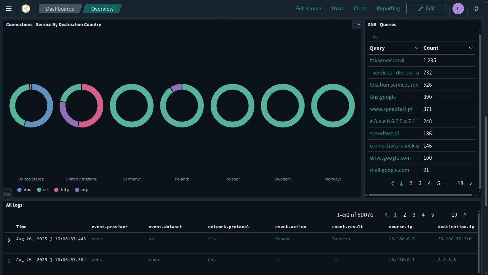

WORK IN PROGRESS
This Is The Time When a Man Feels Like His WAY Is Completing A Perfect Circle.
Palantir + Plotly + Civil Knowledge Integration – Team Awareness Kit (CKI-TAK-PL) For Polish Civil Defence – STRENGTHENING THE ALLIANCE AND MAKING US NATO!.
C4ISR
✌️🦅🇺🇸🇪🇺🇵🇱🇪🇺🇺🇸🦅✌️
I will present the Proof Of Concept for the integration of the components by the end of November.
Happy Birthday To Me! What a Journey It Has Been. Here's To The Next Chapter!.
All The Best From "Giant Mountains" In Poland
✌♻️🌌🚀🌎🌍🌏🛰🌌♻️✌
2025-11-03
Łukasz "LukeStriderGM" Andruszkiewicz
Examples Of Using Plotly In My Projects
This Is The Time When a Man Feels Like His WAY Is Completing A Perfect Circle.
Palantir + Plotly + Civil Knowledge Integration – Team Awareness Kit (CKI-TAK-PL) For Polish Civil Defence – STRENGTHENING THE ALLIANCE AND MAKING US NATO!.
C4ISR
✌️🦅🇺🇸🇪🇺🇵🇱🇪🇺🇺🇸🦅✌️
I will present the Proof Of Concept for the integration of the components by the end of November.
Happy Birthday To Me! What a Journey It Has Been. Here's To The Next Chapter!.
All The Best From "Giant Mountains" In Poland
✌♻️🌌🚀🌎🌍🌏🛰🌌♻️✌
2025-11-03
Łukasz "LukeStriderGM" Andruszkiewicz
Examples Of Using Plotly In My Projects
SARS-CoV-2_PL_V_3.0 ELECTIONS In Poland SARS-CoV-2_PL_V_2.0 BLOX-SCADA






BLOX-TAK ECOSYSTEM DOCS - GOOGLE DRIVE Palantir + Plotly CKI-TAK Gotham Platform SDK AIP Community Registry TAK-GOV UAS Tool MALCOLM THE TAK SYNDICATE